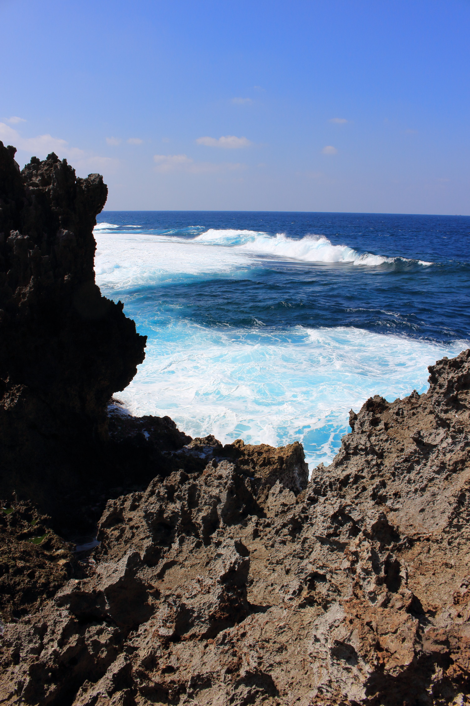

Recess Break: Okinawa
26th February to 4th March
Mid-semester break came so fast, and after 6 weeks of eating and relaxing, it was time for a week of full-time eating and lazing around.
Back to Japan
Makishi Public Market, Naha.
Like most mainstream tourists from western societies, I find Japan very comforting. Though its big cities are bustling and fast paced like other Asian metropoles, and packed with its own obscure trends and bizarre subcultures, the surface experience grazed by visitors is likely to be a quaint, cute, and gentle one. Here, you generally worry less about having pockets picked, crossing the street, haggling, or getting yelled as part of customer services. I'm not saying its better or worse than other ountries, because you can get used to any culture after enough time. Once you overcome conviction of certain death by a hundred motorbikes when walking through an intersection in Hanoi, there is a quiet and anciet charm in the dusty air, amongst a symphony of grumbling engines and street peddlers adverstising sticky rice. With 4/5 of my life experience from New Zealand, however, it was easier to find my way around places which share the same way of proccessing many daily transactions, such as Singapore and Japan.
Post-convenience-appreciation-rant, it was great to be back in the land of instagram-begging aestheticism, and sushi good enough to ditch the salmon and avocado training wheels. With our trusty chauffeur, Katelyn, whom we give a theoretical 5 star Uber rating, and Christine, our local tour guide and Google Maps geographer, we were set, Cally, Rachel, and I. For many wonderful naps in the backseat.
TBH mostly me sleeping
Shuri Castle
Cultural highlights begin with the Shuri Castle, the former administrative center and royal residence of the Ryukyu Kingdom. Before Okinawa became Okinawa, it was Ryukyu, an independent kingdom with more ties to then-China than then-Japan. This is reflected on the design of Shuri castle, which is infused with Chinese elements such as the red lacquer and dragons.
The castle is a recreation, with the real buildings having been burned down several times during battles. The ruins are still preserved below, directly under the rebuild.
Churaumi Aquarium
The seafood, as expected from an island, is great. But even more abundant and beautiful than the sea dead, is the sea life. Although not as impressive as the world's largest aquarium, the Kaiyukan in Osaka, the Churaumi is still a worthwhile visit at half the price (yay) and just as packed (nay).
The most popular kid in school, the whale shark. Ft unnamed friends/followers.
Gasping for... not air?
First time seeing a manatee. A cute-cumber with round flippers
Nago Pineapple Park
Sliding further into the food trail, the last cultural destination is the Nago Pineapple Park. Honestly, I was not that excited about going to a pineapple farm. Because it's a farm. That grows pineapple. I know that pineapple tastes like.
BOY WAS I WRONG.
Everyone knows something is up with Japanese fruit, because they sell $100 bunches of grapes, albino strawberries, and square watermelons. Their fruits are too beautiful and expensive to be true. Well, let me tell you:
it is true.
If you go to the park, buy the 200 yen slice before you get to the wine and juice tasting. If you see slices at the market, buy it. Best pineapple you will have in your life. Worth it too, since a small pineapple there starts at 1000 yen. The flesh is explosively juicy, and it is softer (without being overripe or squishy) than pineapple elsewhere. Sweet and smooth, this also translatesto pineapple being a choice flavour when eating ice cream here.
The fields that sparked uneducated debates on whether pineapples grow above or below ground
Apparently, there are over 200(?) varieties of pineapples, with less than half(?) of then producing edible fruit. Next thing you know this fern is gonna be a pineapple too. No park has ever had me this shook.
Food Porn
Red snapper sashimi at Makishi.
Hello, this is not Trevor James, and I am no food ranger.
I usually omit food discussions and photos because I am picky and sound like an ungrateful swine. When it comes to my favourite country to feast in though, I cannot stress enough how fat this place makes me. Okinawan food was amazing, with super fresh seafood at very reasonable prices.
The super fresh red snapper above is served upstairs from the wet market below. You choose your stall, choose your fish, and are escorted upstairs to the restaurants area where you can order other cooked dishes. I had watched so many YouTube videos of seafood from this market being prepared, and it was very exiciting to live the adventure in the flesh.
Yes, this spotted fish is the same as the one opening its mouth at the aquarium. It knew.
Another local delicacy is sea grapes. Looks pretty and kinda plastic, this seaweed doesn't have that much flavour but is a soft crunch with a pinch of sea juice. You can order it as a side at restaurants. We tried it with braised pork, alongside a few other veggie sides, including goya (bittermelon), and mustard greens, other famous local products. The greens, with a touch of sesame, balance the rich soy pork. Every spoonful with pork sauce drizzled rice is heavenly.
No visit to Japan is complete without several sushi meals, of courses. We had sushi 3 times, one at kaitenzushi, one at a small sushi restaurant, and one at an izakaya place. Counterintuitively, the izakaya served the best sushi at the cheapest prices. Starting from 50 yen (that's right, 70c NZD) for one piece of dreamy creamy buri (yellowtail), to only 150 yen (2 NZD) for the best piece of chutoro I've ever had. Absolutely melts in your mouth, no fishiness, not too much rice. Just glistening, buttery sweetness. This meal was better than the donburi I had at Tsukiji 2 years. We talked about this meal for days after.
Back on the Streets
Strolling down Kokusaidori, the main shopping streets of Naha, you can appreciate the quirky and colourful low risers, with aged windows above the pot plant footed shop fronts. Little palms dot the street. This retro Japanese Hollywood boulevard welcomes all you hipsters.

Out of the city, Okinawa is known for its clear blue waters. We checked out the scene at Cape Maeda, but thought it was a little to early in the year to get into the waters of the Blue Cave.
Sunset at Cape Manzamo reminded me of drives back home with Karla to Lovers' Leap or Tunnel Beach on the chill school days. Seeing other countries is amazing for learning to appreciate the beauty of your own!
The elephant at Cape Manzamo
Closing
Just 5 days in Japan has spoilt me rotten, and once again revolutionised my food consciousness. Now I will have to film highlight cuts of Kitchen Nightmares everytime I eat economy sushi and pineapple out of Japan. Let the first world problems continue in June.